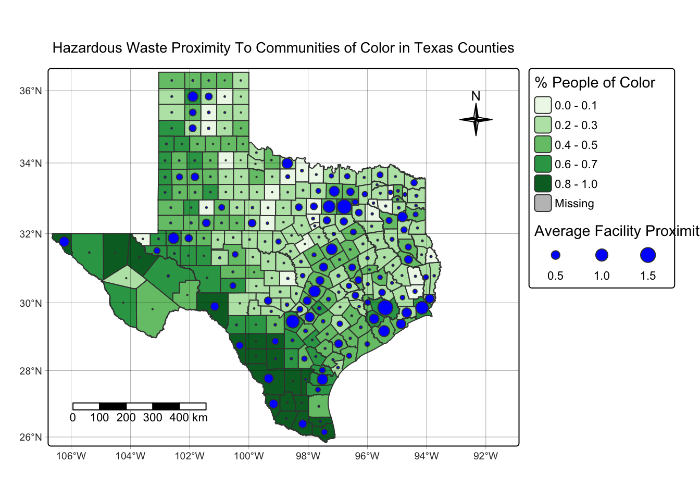
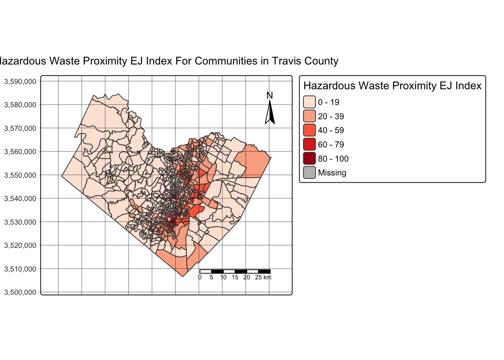

Primary Objective
The state of Texas consists of 254 counties and is racially diverse. A topic of interest regarding environmental justice includes waste management impacts on communities, especially communities of color. Travis County, which includes the city of Austin, has been shaped by a legacy of systemic racism and exclusion that continues to affect communities of color today (City of Austin, n.d).The Environmental Justice Mapping and Screening Tool was created by the Environmental Protection Agency (EPA) to track and reveal environmental injustices based on several socioeconomic variables. The dataset was downloaded from the EPA website and contains environmental and demographic data at the block group level.
The goal of this assignment is to explore how people of color within Texas counties are significantly impacted by their proximity to toxic waste. The following research question was utilized to guide the analysis:
To what extent are communities in Texas counties within distance of a hazardous waste facility, especially communities of color and those within Travis County?
Load the appropriate packages
library(tidyverse) # Load the tidyverse" for data cleaning
library(sf) # Load "sf" for GIS analysis
library(here) # Load "here" to locate and reference files
library(tmap) # Load "tmap" for functions to create and layer mapsImport Data and Initial Data Wrangling
- Import the geodatabase and filter for counties within Texas.
# Read in geodatabase of EJScreen data at the Census Block Group level
ejscreen <- sf::st_read(here::here("data", "ejscreen","EJSCREEN_2023_BG_StatePct_with_AS_CNMI_GU_VI.gdb")) Reading layer `EJSCREEN_StatePctiles_with_AS_CNMI_GU_VI' from data source
`/Users/vedikashirtekar/Documents/MEDS/eds-223/eds-223-hw-1-repo-version-1/data/ejscreen/EJSCREEN_2023_BG_StatePct_with_AS_CNMI_GU_VI.gdb'
using driver `OpenFileGDB'
Simple feature collection with 243021 features and 223 fields
Geometry type: MULTIPOLYGON
Dimension: XY
Bounding box: xmin: -19951910 ymin: -1617130 xmax: 16259830 ymax: 11554350
Projected CRS: WGS 84 / Pseudo-Mercator- Filter for the specified state and a county of interest (ie. Travis County) for the second map.
# Filter to specified state
tx <- ejscreen %>%
dplyr::filter(ST_ABBREV == "TX")
# Filter to a county of interest
travis_county <- ejscreen %>%
dplyr::filter(CNTY_NAME %in% c("Travis County"))- Group by each county within Texas to summarize the average proximity of hazardous waste at the block level (
PTSDF) for each county.
# Group by county name
texas_summary <- tx %>%
group_by(CNTY_NAME) %>%
# Run mean() on "PTSDF" to determine the average proximity of communities to facilities per county
summarise(
avg_PTSDF = mean(PTSDF, na.rm = TRUE),
# Average the percentage of people of color at the block level to obtain a singular representative demographic value for each county
PEOPCOLORPCT = mean(PEOPCOLORPCT, na.rm = TRUE)
)Map 1: Visualizing Average Hazardous Waste Proximity Based on County Demographics
- Use functions in the
tmappackage to creat a map showcasing the average proximity of hazardous waste in each county based on the percentage of people of color for that county.
#- PTSDF = hazardous waste proximity
#- D2_PTSDF = Hazardous waste proximity EJ Index
# - PEOPCOLOR: Concentrations of people of color
#- TSDF_CNT: Number of Hazardous waste facilities in the block group
tmap_mode("plot") # Mode to "plot" to create static map
tm_shape(texas_summary,
bbox = texas_summary) + # Set the boundaries of the map frame with "bbox" parameter to texas_summary
tm_polygons(
"PEOPCOLORPCT",
palette = "brewer.greens", # Color palette scale based on brewer
title = "% People of Color" # Title for legend
) +
tm_symbols(
size = "avg_PTSDF", # Classify average proximity by size
shape = 21, # Set the symbol shape to a circle
col = "blue", # Each circle will be blue
title.size = "Average Facility Proximity (km)")+
#tm_borders(col = "gray40", lwd = 0.4) + ##
tm_compass(position = c("top", "right"), # Move compass to top right corner
size = 2,
type = "4star") + # Specify a four-pointed compass
tm_scalebar(position = c("bottom", "left"), # Add and position a scale bar
text.size = 0.7) + # Specify text labels size on scale bar to .7
tm_graticules( # Add graticules to establish latitude and longitude network
col = "black",
lwd = 0.3, # Establish "thickness" of lines
alpha = 0.6 ) + # Specify transparency to ensure graticules are not too solid
tm_title("Hazardous Waste Proximity To Communities of Color in Texas Counties", size = .9) + # Give title for the map
tm_layout(
legend.outside = TRUE, # Ensure legend is outside map bbox
inner.margins = c(.01,.01,.01,.2), # Margins to adjust for frame width and height were experimented with to fit all elements neatly
component.autoscale = FALSE) # Prevent the title from automatically scaling with the figure
Map 2: Visualizing Hazardous Waste EJ Index in Travis County
- Use functions in the
tmappackage to visualize the hazardous waste EJ Index in each block group within Travis County
# Set travis_county as the base layer
tm_shape(travis_county) +
tm_polygons(
fill = "D2_PTSDF",
fill.scale = tm_scale(values = "brewer.reds"),
fill.legend = tm_legend(title = "Hazardous Waste Proximity EJ Index") # Set the legend title
) +
tm_graticules(
col = "black",
lwd = 0.3,
alpha = 0.6
) +
tm_compass(
position = c("top", "right"),
size = 2
) +
tm_grid( # Add grid system to draw coordinates
col = "black",
lwd = 0.5,
alpha = 0.4
) +
tm_scalebar(
position = c("bottom", "right")) +
tm_title("Hazardous Waste Proximity EJ Index For Communities in Travis County", size = .9) +
tm_layout(inner.margins = c(.1, .1, .1, .1),
component.autoscale = FALSE)